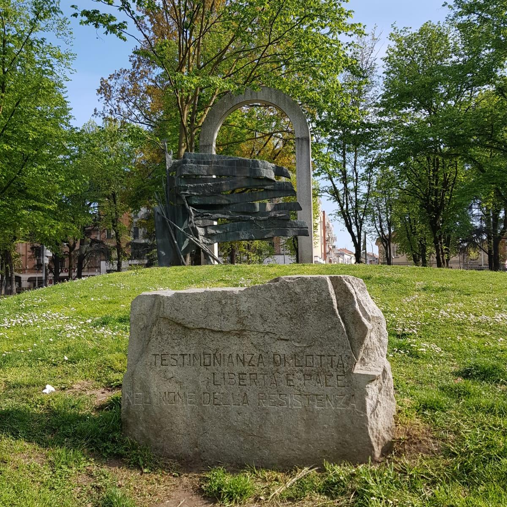
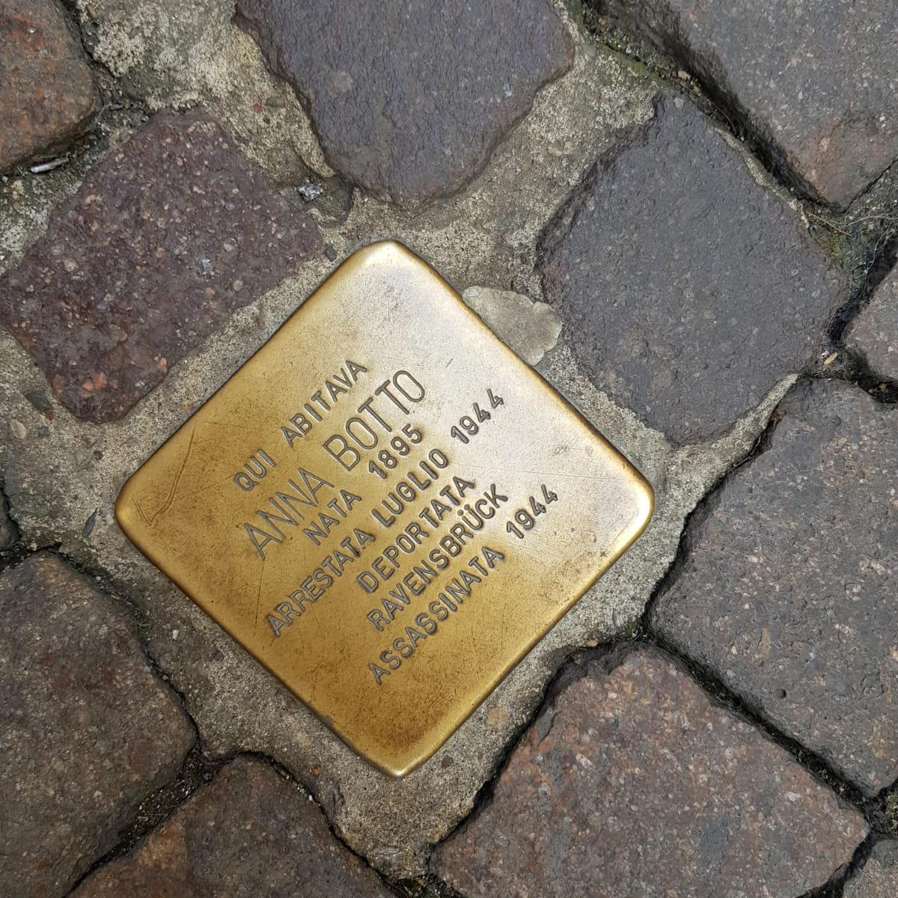
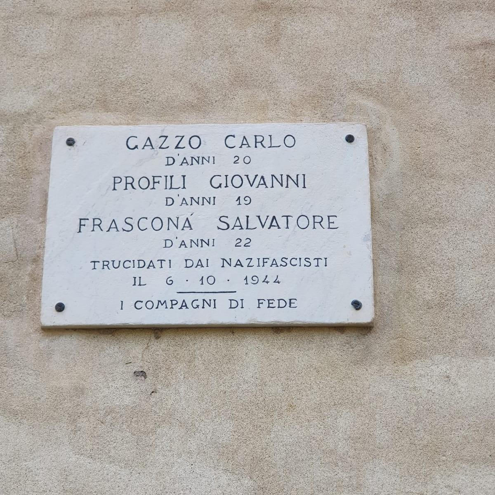
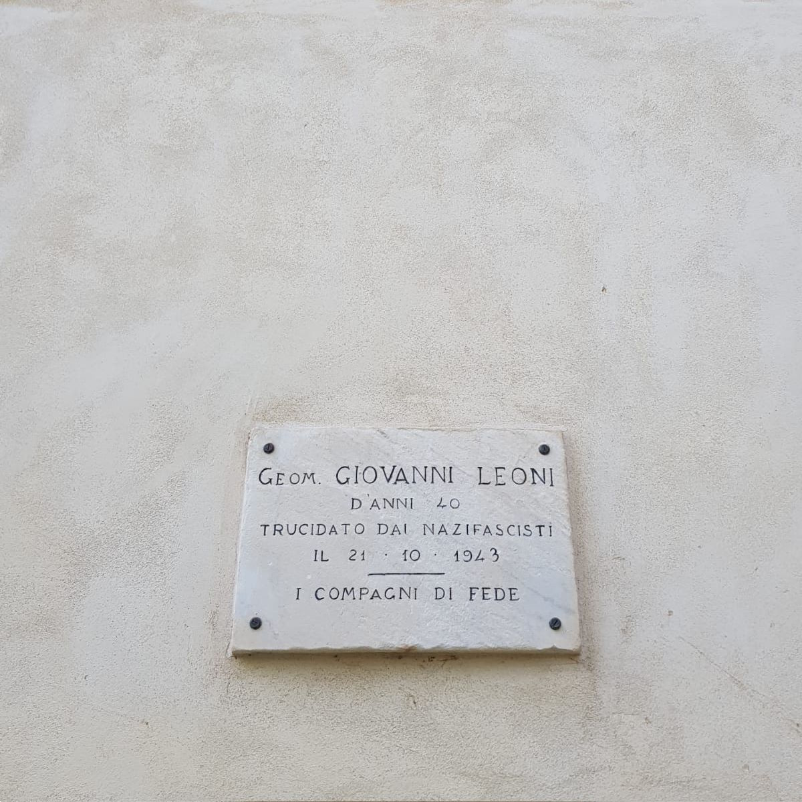
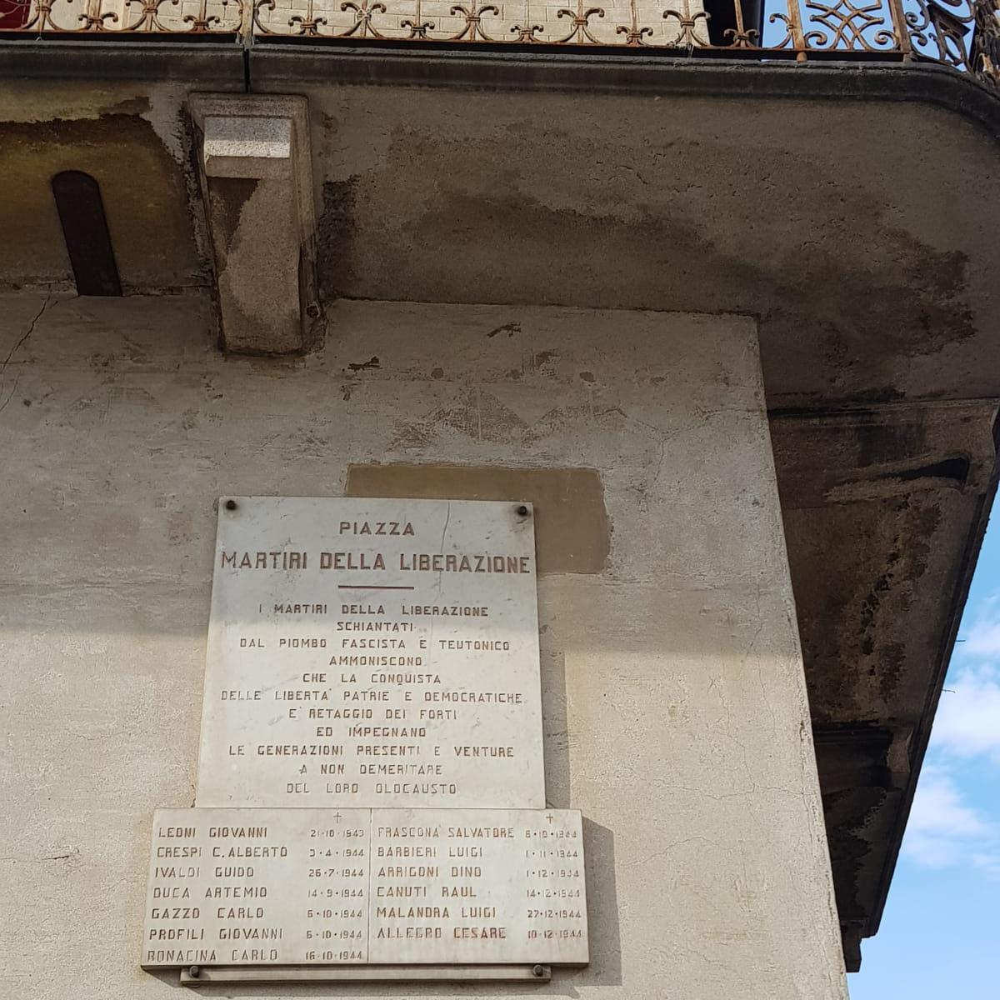
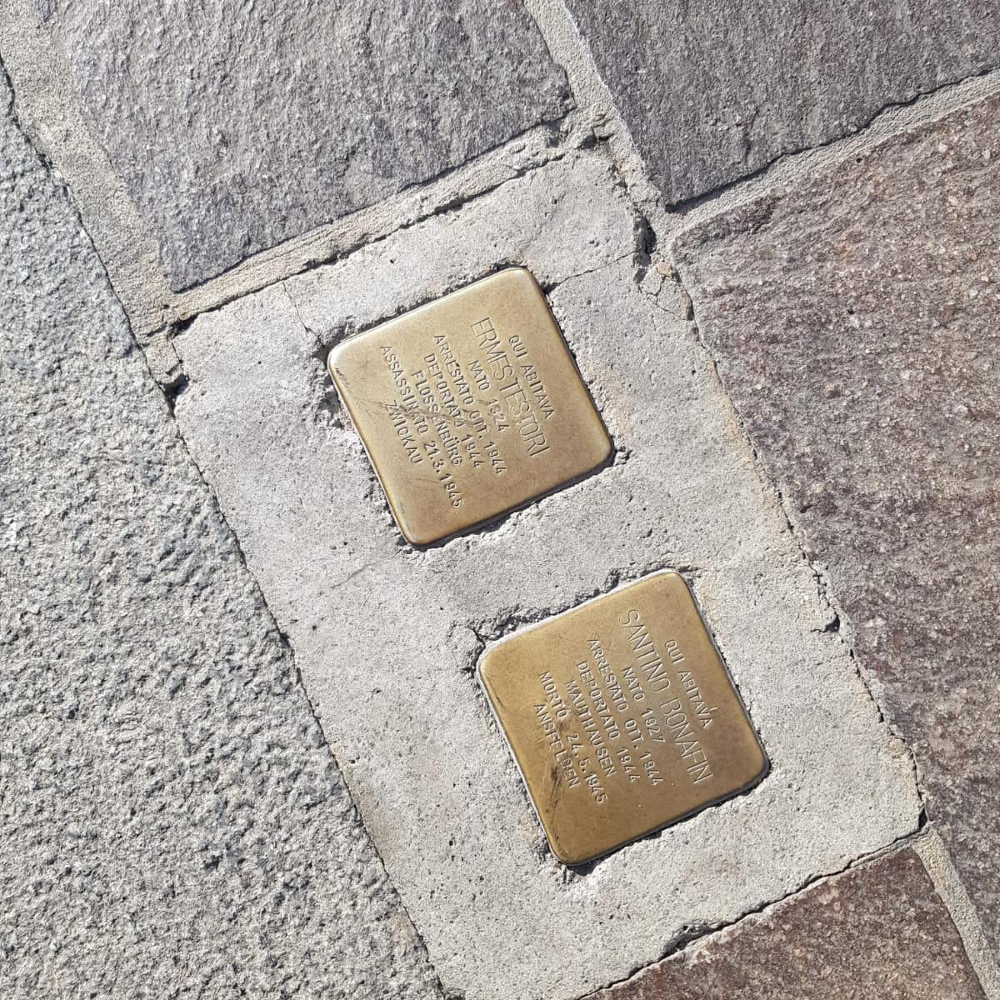
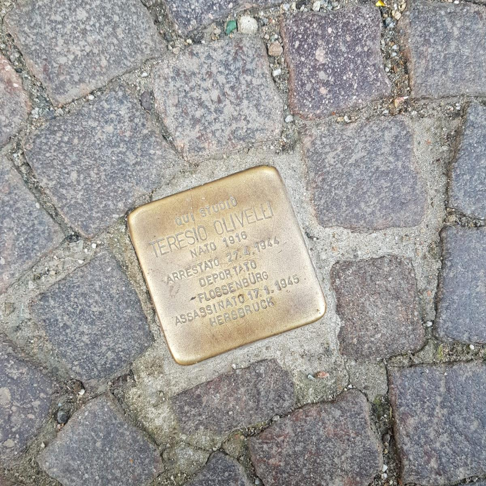
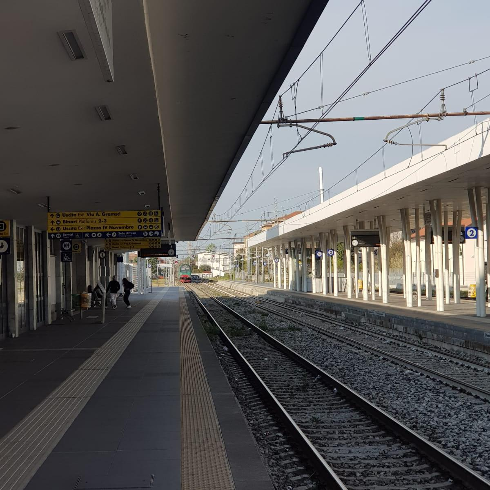
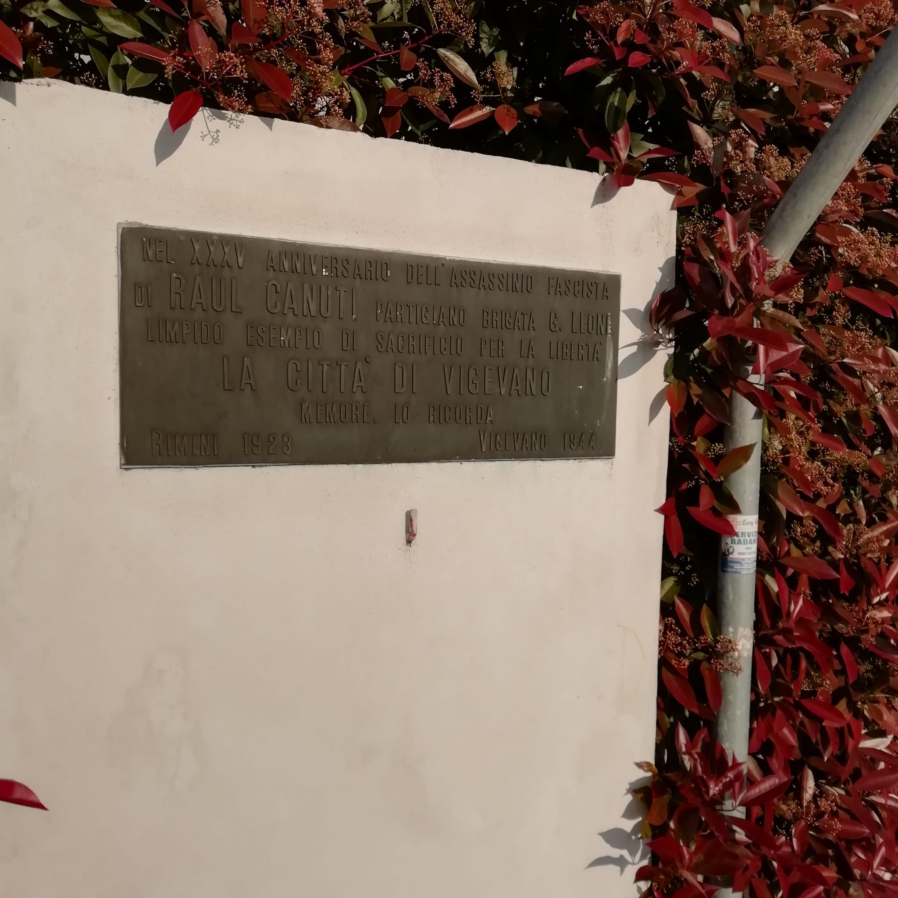
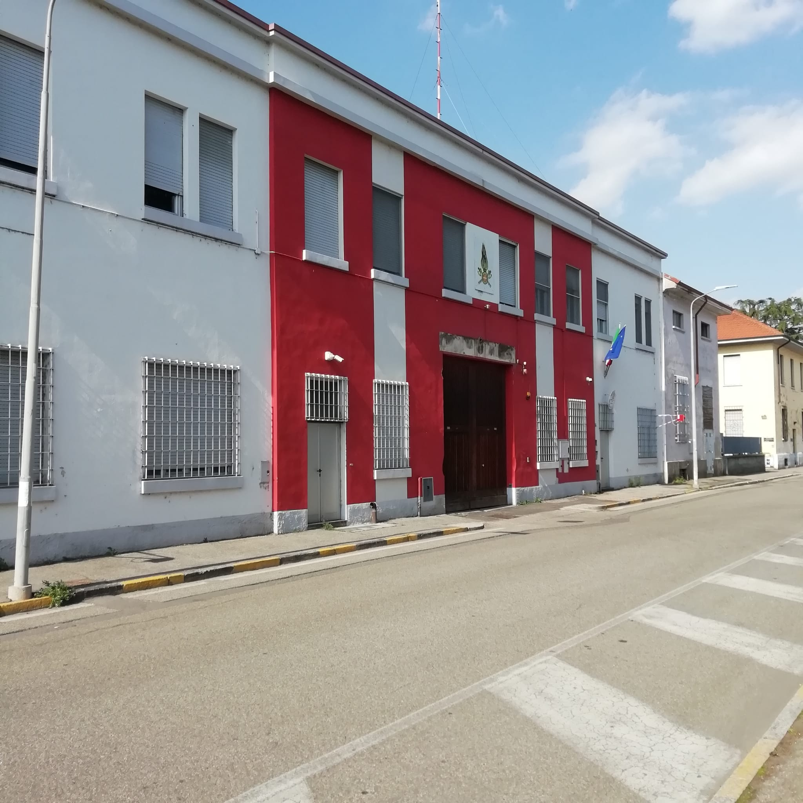

<!DOCTYPE html>
<head>
    <meta http-equiv="content-type" content="text/html; charset=UTF-8" />

        <script>
            L_NO_TOUCH = false;
            L_DISABLE_3D = false;
        </script>

<style>html, body {width: 100%;height: 100%;margin: 0;padding: 0;}</style>
<style>#map {position:absolute;top:0;bottom:0;right:0;left:0;}</style>
<script src="lib/Leaflet/leaflet.js"></script>
<link rel="stylesheet" href="lib/EasyButton-master/src/easy-button.css">
<script src="lib/EasyButton-master/src/easy-button.js"></script>
<script src="js_scripts/jquery-1.12.4.min.js"></script>
<script src="js_scripts/bootstrap.min.js"></script>
<script src="lib/Leaflet/leaflet.awesome-markers.js"></script>
<link rel="stylesheet" href="lib/Leaflet/leaflet.css"/>
<link rel="stylesheet" href="css/bootstrap.min.css"/>
<link rel="stylesheet" href="css/bootstrap-theme.min.css"/>
<link rel="stylesheet" href="css/font-awesome.min.css"/>
<link rel="stylesheet" href="lib/Leaflet/leaflet.awesome-markers.css"/>
<link rel="stylesheet" href="lib/Leaflet/leaflet.awesome.rotate.min.css"/>

            <meta name="viewport" content="width=device-width,
                initial-scale=1.0, maximum-scale=1.0, user-scalable=no" />
            <style>
                #map_403cc1a4260b49bdae4403549ba5c6c9 {
                    position: relative;
                    width: 100.0%;
                    height: 100.0%;
                    left: 0.0%;
                    top: 0.0%;
                }
            </style>

</head>
<body>

            <div class="folium-map" id="map_403cc1a4260b49bdae4403549ba5c6c9" ></div>

</body>
<script>


            var marker_67b8c641035c43ce9b4ae46df9adbc54 = L.marker(
                [45.3157274368169, 8.8518999516964],
                {}
            );


        var custom_icon_e9749a58a9754e1aadd7af0d58e65d9c = L.icon({"iconSize": [30, 30], "iconUrl": "https://gui-doh.github.io/RESISTENZE/v10/images/raised-fist_270a.png"});
        marker_67b8c641035c43ce9b4ae46df9adbc54.setIcon(custom_icon_e9749a58a9754e1aadd7af0d58e65d9c);


        var popup_c1f7fa723abe49088879b9328f44869f = L.popup({"maxWidth": "270"});


            var html_4b5526164afd4766a0eb8e7f50cd5b1f = $(`<div id="html_4b5526164afd4766a0eb8e7f50cd5b1f" style="width: 100.0%; height: 100.0%;"><h1 style = "font-size: 30px;"><b>Testimonianza di lotta, libertà e pace nel nome della resistenza</b></h1><br><a href="mailto:info@ecologiaacustica.org;satorcollettivonoise@gmail.com?subject=PAESAGGIO SONORO --- [segnalazione] --- audio: Testimonianza di lotta, libertà e pace nel nome della resistenza"><i><br>Facci sapere cosa ne pensi di questo audio!</a><audio id="audio_01_PARCO_PARRI" loop> <source src="dati/01_PARCO_PARRI/ZOOM0011_parco_parri.mp3" type="audio/mpeg"> </audio></div>`)[0];
            popup_c1f7fa723abe49088879b9328f44869f.setContent(html_4b5526164afd4766a0eb8e7f50cd5b1f);


        marker_67b8c641035c43ce9b4ae46df9adbc54.bindPopup(popup_c1f7fa723abe49088879b9328f44869f)
marker_67b8c641035c43ce9b4ae46df9adbc54.on('click', function (e) {this.openPopup(); document.getElementById('audio_01_PARCO_PARRI').play();});
        ;


            var marker_c11c2c423b2f4afaaed87ccd8cfc16e1 = L.marker(
                [45.3166090900776, 8.85581195354462],
                {}
            );


        var custom_icon_ae20cb9e41044b2e85531a726eca8100 = L.icon({"iconSize": [30, 30], "iconUrl": "https://gui-doh.github.io/RESISTENZE/v10/images/raised-fist_270a.png"});
        marker_c11c2c423b2f4afaaed87ccd8cfc16e1.setIcon(custom_icon_ae20cb9e41044b2e85531a726eca8100);


        var popup_66fef80f5bdd4f709fc5861fbd44dd54 = L.popup({"maxWidth": "270"});


            var html_18b5b81ea54346b6bab78a8c4e434ae5 = $(`<div id="html_18b5b81ea54346b6bab78a8c4e434ae5" style="width: 100.0%; height: 100.0%;"><h1 style = "font-size: 30px;"><b>Pietra d'inciampo Anna Botto</b></h1><br><a href="mailto:info@ecologiaacustica.org;satorcollettivonoise@gmail.com?subject=PAESAGGIO SONORO --- [segnalazione] --- audio: Pietra d'inciampo Anna Botto"><i><br>Facci sapere cosa ne pensi di questo audio!</a><audio id="audio_02_VIA_DEL_POPOLO_PIETRA" loop> <source src="dati/02_VIA_DEL_POPOLO_PIETRA/ZOOM0002_via_del_popolo.mp3" type="audio/mpeg"> </audio></div>`)[0];
            popup_66fef80f5bdd4f709fc5861fbd44dd54.setContent(html_18b5b81ea54346b6bab78a8c4e434ae5);


        marker_c11c2c423b2f4afaaed87ccd8cfc16e1.bindPopup(popup_66fef80f5bdd4f709fc5861fbd44dd54)
marker_c11c2c423b2f4afaaed87ccd8cfc16e1.on('click', function (e) {this.openPopup(); document.getElementById('audio_02_VIA_DEL_POPOLO_PIETRA').play();});
        ;


            var marker_71f11dc886974f4dba62c30e184c838d = L.marker(
                [45.3161573675983, 8.85633364319802],
                {}
            );


        var custom_icon_fbdb354fcb884c37901fc776ca9cb73d = L.icon({"iconSize": [30, 30], "iconUrl": "https://gui-doh.github.io/RESISTENZE/v10/images/raised-fist_270a.png"});
        marker_71f11dc886974f4dba62c30e184c838d.setIcon(custom_icon_fbdb354fcb884c37901fc776ca9cb73d);


        var popup_d8bacc994a704e1aaaaaec2ae5317ad4 = L.popup({"maxWidth": "270"});


            var html_10d907f106c94d338b34af94d664b7fb = $(`<div id="html_10d907f106c94d338b34af94d664b7fb" style="width: 100.0%; height: 100.0%;"><h1 style = "font-size: 30px;"><b>Fucilazione di Carlo Gazzo, Giovanni Profili, Salvatore Frascona</b></h1><br><a href="mailto:info@ecologiaacustica.org;satorcollettivonoise@gmail.com?subject=PAESAGGIO SONORO --- [segnalazione] --- audio: Fucilazione di Carlo Gazzo, Giovanni Profili, Salvatore Frascona"><i><br>Facci sapere cosa ne pensi di questo audio!</a><audio id="audio_03_CASTELLO_LAPIDE_GAZZO" loop> <source src="dati/03_CASTELLO_LAPIDE_GAZZO/ZOOM0003_gazzo.mp3" type="audio/mpeg"> </audio></div>`)[0];
            popup_d8bacc994a704e1aaaaaec2ae5317ad4.setContent(html_10d907f106c94d338b34af94d664b7fb);


        marker_71f11dc886974f4dba62c30e184c838d.bindPopup(popup_d8bacc994a704e1aaaaaec2ae5317ad4)
marker_71f11dc886974f4dba62c30e184c838d.on('click', function (e) {this.openPopup(); document.getElementById('audio_03_CASTELLO_LAPIDE_GAZZO').play();});
        ;


            var marker_5189f668feb64363ab4c0cd98401b978 = L.marker(
                [45.3165836277371, 8.85663539171219],
                {}
            );


        var custom_icon_f70d387dc0bd4b40a7d825c5c450e939 = L.icon({"iconSize": [30, 30], "iconUrl": "https://gui-doh.github.io/RESISTENZE/v10/images/raised-fist_270a.png"});
        marker_5189f668feb64363ab4c0cd98401b978.setIcon(custom_icon_f70d387dc0bd4b40a7d825c5c450e939);


        var popup_8b6051a7480d4348be20e0bdc93e4f23 = L.popup({"maxWidth": "270"});


            var html_fcbd655cb8934a16ac7ee26b10b5b8a3 = $(`<div id="html_fcbd655cb8934a16ac7ee26b10b5b8a3" style="width: 100.0%; height: 100.0%;"><h1 style = "font-size: 30px;"><b>Fucilazione di Giovanni Leoni</b></h1><br><a href="mailto:info@ecologiaacustica.org;satorcollettivonoise@gmail.com?subject=PAESAGGIO SONORO --- [segnalazione] --- audio: Fucilazione di Giovanni Leoni"><i><br>Facci sapere cosa ne pensi di questo audio!</a><audio id="audio_04_CASTELLO_LAPIDE_LEONI" loop> <source src="dati/04_CASTELLO_LAPIDE_LEONI/ZOOM0004_leoni.mp3" type="audio/mpeg"> </audio></div>`)[0];
            popup_8b6051a7480d4348be20e0bdc93e4f23.setContent(html_fcbd655cb8934a16ac7ee26b10b5b8a3);


        marker_5189f668feb64363ab4c0cd98401b978.bindPopup(popup_8b6051a7480d4348be20e0bdc93e4f23)
marker_5189f668feb64363ab4c0cd98401b978.on('click', function (e) {this.openPopup(); document.getElementById('audio_04_CASTELLO_LAPIDE_LEONI').play();});
        ;


            var marker_e6334f6dbcb44818b379e26bdba3c4fc = L.marker(
                [45.3183527616524, 8.85887637734413],
                {}
            );


        var custom_icon_9d669e5e643040e29adcb68f7a2e2a9d = L.icon({"iconSize": [30, 30], "iconUrl": "https://gui-doh.github.io/RESISTENZE/v10/images/raised-fist_270a.png"});
        marker_e6334f6dbcb44818b379e26bdba3c4fc.setIcon(custom_icon_9d669e5e643040e29adcb68f7a2e2a9d);


        var popup_9e0e600fd8d747908b72091d204b5e2d = L.popup({"maxWidth": "270"});


            var html_948888d4f6f94a868a6d4629ea1660f9 = $(`<div id="html_948888d4f6f94a868a6d4629ea1660f9" style="width: 100.0%; height: 100.0%;"><h1 style = "font-size: 30px;"><b>Piazza martiri della Liberazione</b></h1><br><a href="mailto:info@ecologiaacustica.org;satorcollettivonoise@gmail.com?subject=PAESAGGIO SONORO --- [segnalazione] --- audio: Piazza martiri della Liberazione"><i><br>Facci sapere cosa ne pensi di questo audio!</a><audio id="audio_05_SAN_DIONIGI_LAPIDI" loop> <source src="dati/05_SAN_DIONIGI_LAPIDI/ZOOM0005_san_dionigi_lapidi_v02.mp3" type="audio/mpeg"> </audio></div>`)[0];
            popup_9e0e600fd8d747908b72091d204b5e2d.setContent(html_948888d4f6f94a868a6d4629ea1660f9);


        marker_e6334f6dbcb44818b379e26bdba3c4fc.bindPopup(popup_9e0e600fd8d747908b72091d204b5e2d)
marker_e6334f6dbcb44818b379e26bdba3c4fc.on('click', function (e) {this.openPopup(); document.getElementById('audio_05_SAN_DIONIGI_LAPIDI').play();});
        ;


            var marker_896f0a9aecdc4831800463ce9437c135 = L.marker(
                [45.3183084396756, 8.85885626077652],
                {}
            );


        var custom_icon_2a2a94ead07e4369a2717d6be2fdb034 = L.icon({"iconSize": [30, 30], "iconUrl": "https://gui-doh.github.io/RESISTENZE/v10/images/raised-fist_270a.png"});
        marker_896f0a9aecdc4831800463ce9437c135.setIcon(custom_icon_2a2a94ead07e4369a2717d6be2fdb034);


        var popup_9eb26949d4b54c1da66aba2006eb6b96 = L.popup({"maxWidth": "270"});


            var html_0c00ad14554e4e3092c9173b26959594 = $(`<div id="html_0c00ad14554e4e3092c9173b26959594" style="width: 100.0%; height: 100.0%;"><h1 style = "font-size: 30px;"><b>Pietre d'inciampo Ermes Testori e Santino Bonafin</b></h1><br><a href="mailto:info@ecologiaacustica.org;satorcollettivonoise@gmail.com?subject=PAESAGGIO SONORO --- [segnalazione] --- audio: Pietre d'inciampo Ermes Testori e Santino Bonafin"><i><br>Facci sapere cosa ne pensi di questo audio!</a><audio id="audio_06_SAN_DIONIGI_PIETRE" loop> <source src="dati/06_SAN_DIONIGI_PIETRE/ZOOM0006_san_dionigi_pietre.mp3" type="audio/mpeg"> </audio></div>`)[0];
            popup_9eb26949d4b54c1da66aba2006eb6b96.setContent(html_0c00ad14554e4e3092c9173b26959594);


        marker_896f0a9aecdc4831800463ce9437c135.bindPopup(popup_9eb26949d4b54c1da66aba2006eb6b96)
marker_896f0a9aecdc4831800463ce9437c135.on('click', function (e) {this.openPopup(); document.getElementById('audio_06_SAN_DIONIGI_PIETRE').play();});
        ;


            var marker_2cb774f5cc874ce1a698cfed9ac6adbf = L.marker(
                [45.3142665068648, 8.85942488908768],
                {}
            );


        var custom_icon_e1fe0db7efa04358a7fbcb54810eb0c9 = L.icon({"iconSize": [30, 30], "iconUrl": "https://gui-doh.github.io/RESISTENZE/v10/images/raised-fist_270a.png"});
        marker_2cb774f5cc874ce1a698cfed9ac6adbf.setIcon(custom_icon_e1fe0db7efa04358a7fbcb54810eb0c9);


        var popup_ba07beb949eb463c9685474f8321dbf5 = L.popup({"maxWidth": "270"});


            var html_41688db60f594c348e3334baef0989b8 = $(`<div id="html_41688db60f594c348e3334baef0989b8" style="width: 100.0%; height: 100.0%;"><h1 style = "font-size: 30px;"><b>Pietra d'inciampo Teresio Olivelli</b></h1><br><a href="mailto:info@ecologiaacustica.org;satorcollettivonoise@gmail.com?subject=PAESAGGIO SONORO --- [segnalazione] --- audio: Pietra d'inciampo Teresio Olivelli"><i><br>Facci sapere cosa ne pensi di questo audio!</a><audio id="audio_07_CAIROLI_FUORI_PIETRA" loop> <source src="dati/07_CAIROLI_FUORI_PIETRA/ZOOM0007_cairoli_pietra.mp3" type="audio/mpeg"> </audio></div>`)[0];
            popup_ba07beb949eb463c9685474f8321dbf5.setContent(html_41688db60f594c348e3334baef0989b8);


        marker_2cb774f5cc874ce1a698cfed9ac6adbf.bindPopup(popup_ba07beb949eb463c9685474f8321dbf5)
marker_2cb774f5cc874ce1a698cfed9ac6adbf.on('click', function (e) {this.openPopup(); document.getElementById('audio_07_CAIROLI_FUORI_PIETRA').play();});
        ;


            var marker_a89cf0e3131c404b82eb43d091a67651 = L.marker(
                [45.3127707488938, 8.86206418275833],
                {}
            );


        var custom_icon_e94c1467b02743ee86f7747fee95f592 = L.icon({"iconSize": [30, 30], "iconUrl": "https://gui-doh.github.io/RESISTENZE/v10/images/raised-fist_270a.png"});
        marker_a89cf0e3131c404b82eb43d091a67651.setIcon(custom_icon_e94c1467b02743ee86f7747fee95f592);


        var popup_ff0d5ffc96144926a7c4d83afa582066 = L.popup({"maxWidth": "270"});


            var html_e0823e2c51274a57ac2c4ae1b5e17493 = $(`<div id="html_e0823e2c51274a57ac2c4ae1b5e17493" style="width: 100.0%; height: 100.0%;"><h1 style = "font-size: 30px;"><b>La stazione, luogo della battaglia del treno</b></h1><br><a href="mailto:info@ecologiaacustica.org;satorcollettivonoise@gmail.com?subject=PAESAGGIO SONORO --- [segnalazione] --- audio: La stazione, luogo della battaglia del treno"><i><br>Facci sapere cosa ne pensi di questo audio!</a><audio id="audio_08_STAZIONE" loop> <source src="dati/08_STAZIONE/ZOOM0008_stazione_dei_treni.mp3" type="audio/mpeg"> </audio></div>`)[0];
            popup_ff0d5ffc96144926a7c4d83afa582066.setContent(html_e0823e2c51274a57ac2c4ae1b5e17493);


        marker_a89cf0e3131c404b82eb43d091a67651.bindPopup(popup_ff0d5ffc96144926a7c4d83afa582066)
marker_a89cf0e3131c404b82eb43d091a67651.on('click', function (e) {this.openPopup(); document.getElementById('audio_08_STAZIONE').play();});
        ;


            var marker_78a4a4ef02334a5b938d8f0186f38b7d = L.marker(
                [45.306211959457, 8.85309487581253],
                {}
            );


        var custom_icon_f42919c222054d539b086317b0535126 = L.icon({"iconSize": [30, 30], "iconUrl": "https://gui-doh.github.io/RESISTENZE/v10/images/raised-fist_270a.png"});
        marker_78a4a4ef02334a5b938d8f0186f38b7d.setIcon(custom_icon_f42919c222054d539b086317b0535126);


        var popup_49f0ce426dad418cb11e435a0c3cb141 = L.popup({"maxWidth": "270"});


            var html_c9326aba734d4d1c9f04c1015e42c416 = $(`<div id="html_c9326aba734d4d1c9f04c1015e42c416" style="width: 100.0%; height: 100.0%;"><h1 style = "font-size: 30px;"><b>Lapide a Teresio Olivelli</b></h1><br><a href="mailto:info@ecologiaacustica.org;satorcollettivonoise@gmail.com?subject=PAESAGGIO SONORO --- [segnalazione] --- audio: Lapide a Teresio Olivelli"><i><br>Facci sapere cosa ne pensi di questo audio!</a><audio id="audio_09_CSO_GENOVA" loop> <source src="dati/09_CSO_GENOVA/ZOOM0010_cso_genova.mp3" type="audio/mpeg"> </audio></div>`)[0];
            popup_49f0ce426dad418cb11e435a0c3cb141.setContent(html_c9326aba734d4d1c9f04c1015e42c416);


        marker_78a4a4ef02334a5b938d8f0186f38b7d.bindPopup(popup_49f0ce426dad418cb11e435a0c3cb141)
marker_78a4a4ef02334a5b938d8f0186f38b7d.on('click', function (e) {this.openPopup(); document.getElementById('audio_09_CSO_GENOVA').play();});
        ;


            var marker_99b4434d29ca43568ac6fffdde3b86e9 = L.marker(
                [45.3226263689976, 8.85598361492157],
                {}
            );


        var custom_icon_4c99fefc07214967a51479353826f6cb = L.icon({"iconSize": [30, 30], "iconUrl": "https://gui-doh.github.io/RESISTENZE/v10/images/raised-fist_270a.png"});
        marker_99b4434d29ca43568ac6fffdde3b86e9.setIcon(custom_icon_4c99fefc07214967a51479353826f6cb);


        var popup_2745fbb3008d48519aa04e859afb5434 = L.popup({"maxWidth": "270"});


            var html_c217ef4b146d4060b8979e14fc0b01d7 = $(`<div id="html_c217ef4b146d4060b8979e14fc0b01d7" style="width: 100.0%; height: 100.0%;"><h1 style = "font-size: 30px;"><b>Caserma dei Vigili del fuoco</b></h1><br><a href="mailto:info@ecologiaacustica.org;satorcollettivonoise@gmail.com?subject=PAESAGGIO SONORO --- [segnalazione] --- audio: Caserma dei Vigili del fuoco"><i><br>Facci sapere cosa ne pensi di questo audio!</a><audio id="audio_10_VVF" loop> <source src="dati/10_VVF/ZOOM0012_vvf.mp3" type="audio/mpeg"> </audio></div>`)[0];
            popup_2745fbb3008d48519aa04e859afb5434.setContent(html_c217ef4b146d4060b8979e14fc0b01d7);


        marker_99b4434d29ca43568ac6fffdde3b86e9.bindPopup(popup_2745fbb3008d48519aa04e859afb5434)
marker_99b4434d29ca43568ac6fffdde3b86e9.on('click', function (e) {this.openPopup(); document.getElementById('audio_10_VVF').play();});
        ;


</script>
<script>
		var Luogo_della_Memoria = L.layerGroup([marker_67b8c641035c43ce9b4ae46df9adbc54, marker_c11c2c423b2f4afaaed87ccd8cfc16e1, marker_71f11dc886974f4dba62c30e184c838d, marker_5189f668feb64363ab4c0cd98401b978, marker_e6334f6dbcb44818b379e26bdba3c4fc, marker_896f0a9aecdc4831800463ce9437c135, marker_2cb774f5cc874ce1a698cfed9ac6adbf, marker_a89cf0e3131c404b82eb43d091a67651, marker_78a4a4ef02334a5b938d8f0186f38b7d, marker_99b4434d29ca43568ac6fffdde3b86e9]);
		var overlayGroups = {
			"Luogo della Memoria": Luogo_della_Memoria,
		};
</script><script>
            var map_403cc1a4260b49bdae4403549ba5c6c9 = L.map(
                "map_403cc1a4260b49bdae4403549ba5c6c9",
                {
                    center: [45.317245, 8.858102],
                    crs: L.CRS.EPSG3857,
                    maxBounds: [[45.151245, 8.692102], [45.483245, 9.024102000000001]],
                    zoom: 12,
                    zoomControl: true,
                    preferCanvas: false,
					layers:[Luogo_della_Memoria]
                }
            );


            var tile_layer_43e73226b4f145b6a6645a1fefa6754d = L.tileLayer(
                "https://tile.thunderforest.com/landscape/{z}/{x}/{y}.png?apikey=3dc24c77246845e5b1c941baf227ba56",
                {"attribution": "\u0026copy; \u003ca href=\"http://www.thunderforest.com/\"\u003eThunderforest\u003c/a\u003e, \u0026copy; \u003ca href=\"https://www.openstreetmap.org/copyright\"\u003eOpenStreetMap\u003c/a\u003e contributors | map data by \u003ca href=\"https://www.facebook.com/SatorNoise\"\u003eS\u0026#47\u0026#92TOR\u003c/a\u003e", "detectRetina": false, "maxNativeZoom": 20, "maxZoom": 20, "minZoom": 8, "noWrap": false, "opacity": 1, "subdomains": "abc", "tms": false}
            ).addTo(map_403cc1a4260b49bdae4403549ba5c6c9);

</script><script>
var tile_layer_2 = L.tileLayer("http://{s}.google.com/vt/lyrs=s&x={x}&y={y}&z={z}",{"attribution": "map data by \u003ca href=\"https://www.facebook.com/SatorNoise\"\u003eS\u0026#47\u0026#92TOR\u003c/a\u003e",maxZoom: 20,minZoom: 8,subdomains:['mt0', 'mt1', 'mt2', 'mt3']});
</script><script>
var baselayers = {"Satellite" : tile_layer_2, "Mappa" :tile_layer_43e73226b4f145b6a6645a1fefa6754d}
</script><script>
layerControl = L.control.layers(baselayers, overlayGroups, {position: 'topright'} ,{collapsed: true}).addTo(map_403cc1a4260b49bdae4403549ba5c6c9);
</script>
<script>
            // qui è tutto nuovo

            var attivo = "NO"

            var markerGroup = L.layerGroup().addTo(map_403cc1a4260b49bdae4403549ba5c6c9);
            map_403cc1a4260b49bdae4403549ba5c6c9.on('click' , function(e) {
                if (attivo === "YES"){
                markerGroup.clearLayers();
                var poplocation = e.latlng;
                
                var marker = L.marker([e.latlng.lat , e.latlng.lng]).addTo(markerGroup);
                var coordinates = [marker.getLatLng().lat , marker.getLatLng().lng];
                
                //var mailcontent = "mailto:info@ecologiaacustica.org;satorcollettivonoise@gmail.com?subject=RESISTENZE%20&body=[segnalazione]%20---%20X:%20"+coordinates[0]+"%20Y:%20"+coordinates[1];
                var mailcontent = "mailto:info@ecologiaacustica.org;satorcollettivonoise@gmail.com?subject=RESISTENZEO%20---%20[segnalazione]%20---%20X:%20"+coordinates[0]+"%20Y:%20"+coordinates[1];

                marker.bindPopup("<p>Lat: " + e.latlng.lat + "</p><p>Lon: " + e.latlng.lng + "</p><a href=" + mailcontent + "><i>Segnalaci questo posto!</a>").openOn(map_403cc1a4260b49bdae4403549ba5c6c9);

                marker.addTo(markerGroup);

            }});
   const locButton = L.easyButton({
		states: [{
            stateName: 'inattivo',
            icon:      '',
            title:     'Attiva la funzione per inviare una segnalazione cliccando un punto sulla mappa', 
            onClick: function(btn, map_403cc1a4260b49bdae4403549ba5c6c9) {
                attivo = "YES";
                btn.state('attivo');
                
                document.getElementById('map_403cc1a4260b49bdae4403549ba5c6c9').style.cursor = 'crosshair'
            }
		    }, {
            stateName: 'attivo',
            icon:      '',
            title:     'Clicca per disattivare',
            onClick: function(btn, map_403cc1a4260b49bdae4403549ba5c6c9) {
                markerGroup.clearLayers();
                attivo = "NO";
                btn.state('inattivo');
                
                document.getElementById('map_403cc1a4260b49bdae4403549ba5c6c9').style.cursor = ''
            }
		}]
	}).addTo(map_403cc1a4260b49bdae4403549ba5c6c9);
   locButton.button.style.padding = '0px';
</script>

<script>
L.easyButton('', function(){window.open('info.html' , '_blank')}).addTo(map_403cc1a4260b49bdae4403549ba5c6c9).button.style.padding='0px';
</script>
